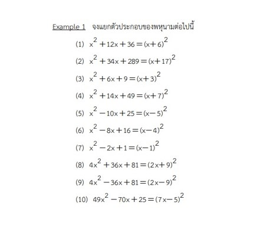
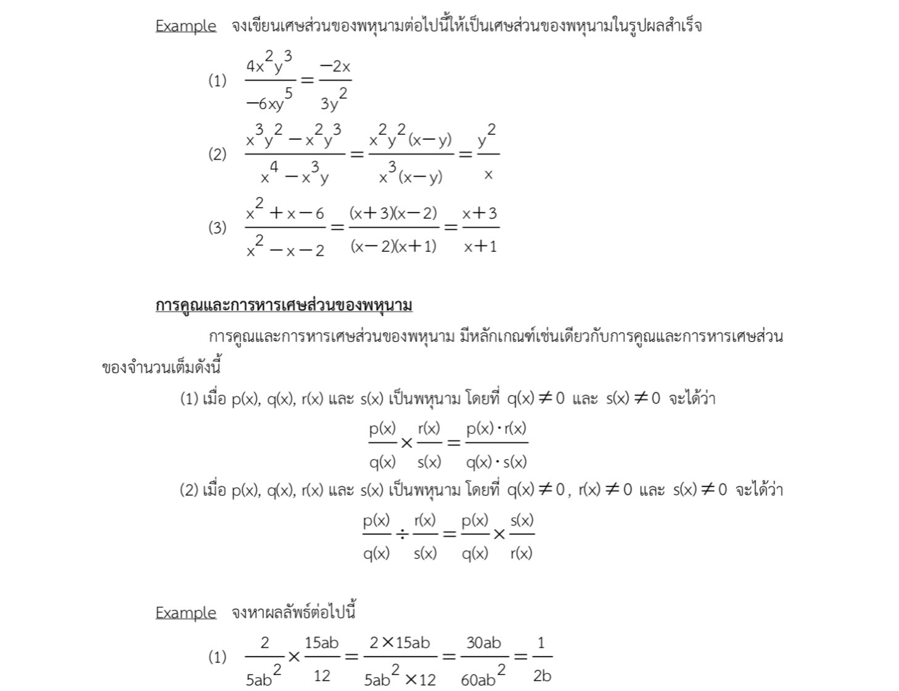

Single Variable Polynomial
-พหุนามตัวแปรเดียว
เอกนาม (monomial) คือ ผลคูณของค่าลงตัวกับตัวแปรตั้งแต่หนึ่งตัวขึ้นไปและเลขชี้กำลังของตัวแปรเป็น 0 หรือจำนวนเต็มบวก
พหุนาม (Polynomial) การนำเอาเอกนามตั้งแต่ 2 เอกนามขึ้นไปมาเขียนในรูปการบวกกัน เช่น 2x^2 + 3y , -2x^3y^2+3xyz เป็นต้น
-การหารด้วยพหุนาม
เป็นการหาผลหารและเศษจากการหารเหมือนกับการหารจำนวนเต็มเช่น การหาร 7 ด้วย 3 จะได้ผลหารคือ 2 และเศษเหลือคือ 1 เขียนสมการได้ 7 = 3 x 2 + 1
กรณีทั่วไป ตัวตั้ง = ตัวหาร x ผลหาร + เศษเหลือ
1. การหารพหุนามด้วยพหุนามด้วยวิธีการหารจeนวนเต็ม ดังนั้นการหารพหุนามด้วยพหุนามใช้วิธีเดียวกันโดยกำหนด a(x) ตัวตั้ง, b(x) ตัวหาร , q(x) เป็นผลหาร และ r(x) เป็นเศษเหลือจะได้
2. การหารพหุนามด้วยพหุนามโดยการหารยาว ขั้นตอนง่าย ๆ
(1) นำพจน์แรกของตัวหารไปหารพจน์แรกของตัวตั้งเขียนเป็นผลตัวแรก
(2) นำผลหารที่ได้คูณตัวหารทั้งหมดแล้วไปลบออกจากตัวตั้ง
(3) ทำเช่นนี้ไปเรื่อย ๆ จนตัวตั้งมีดีกรีน้อยกว่าตัวหารหรือเป็น 0 เหลือเศษจากการหาร
การแยกตัวประกอบของพหุนาม
การแยกตัวประกอบของพหุนาม คือ การทำพหุนามให้เป็นวงเล็บคูณกันโดยที่แต่ละวงเล็บนั้นจะเป็นพหุนามที่มีดีกรีต่ำกว่าพหุนามที่กำหนดโดยจะมีวิธีการแยกตัวประกอบดังนี้
(1) การแยกตัวประกอบเมื่อพหุนามมี 2 พจน์
(1.1) วิธีดึงตัวประกอบร่วม หลักการคือ ดึงตัวพหุนามที่ร่วมกันออกไว้นอกวงเล็บ โดยแต่ละวงเล็บนั้นต้องทำให้ x มีกำลังเป็น 1 หรือสูงสุดแค่ x^2
(2) การแยกตัวประกอบเมื่อพหุนามมี 3 พจน์
(2.1) แยกเป็นสองวงเล็บคูณกัน แยกพจน์หน้าและพจน์หลัง แล้วหาพจน์กลาง สรุปได้ว่า
ซึ่งจะหาพจน์กลางโดยการนำพจน์ใกล้คูณใกล้บวกกับไกลคูณไกล (x บวกลบ c)(x บวกลบ d) บวกได้พจน์กลาง

2.3 การทำกำลังสองสมบูรณ์ที่มีพหุนาม 3 พจน์ ให้เป็นกำลังสองสมบูรณ์ มีขั้นตอนดังนี้
1. ทำให้สัมประสิทธิ์ของ x^2 เป๊น 1
2. นำ 2 ไปหารสัมประสิท x ได้เท่าไดนำมายกกำลังสองเเล้วบวกเข้าเเล้วลบออก
3. จัด 3 พจน์ให้เหลือ 2 พจน์โดยใช้สูตรของผลบวกเเละผลต่างกำลังสอง
(3) การแยกตัวประกอบเมื่อพหุนามมี 4 พจน์และมีดีกรีมากกว่า 2
โดยจะมีทฤษฎีบทดังต่อไปนี้
3.1 ทฤษฎีบทเศษเหลือ
3.2 ทฤษฎีบทตัวประกอบ
3.3 ทฤษฎีบทตัวประกอบตรรกยะ
3.1 ทฤษฎีบทเศษเหลือ (Remainder theorem) ถ้าหารพหุนาม P(x) ด้วย (x - c) แล้วเศษที่ได้จากการหารจะเท่ากับ P(c) เมื่อ c เป็นจำนวนจริง
สรุปได้ว่า
3.2 ทฤษฎีบทตัวประกอบ (Factor theorem)
เป็นทฤษฎีบทที่ให้ P(x) เป็นพหุนามที่เป็นตัวตั้ง และ x – c เป็นตัวประกอบของ P(x) ก็ต่อเมื่อP(c) = 0 ซึ่งมีวิธีการดังนี้
1. กำหนด P(x) (โดยเรียงดีกรีจากมากไปหาน้อย)
2. หาตัวประกอบของ c จาก P(x) (พจน์สุดท้ายของ P(x) )
3. นำ c มาแทนใน P(x) ที่ทำให้ P(c) = 0
4. จะได้ x – c เป็นตัวประกอบของ P(x)
5. นำ x – c ไปหาร P(x) โดยวิธีหารสังเคราะห์
6. จะได้ตัวประกอบของ P(x)
3.3 ทฤษฎีบทตัวประกอบตรรกยะ (Rational factor theorem) เป็นการนำทฤษฎีบทตัวประกอบมาประยุกต์ใช้โดยที่สัมประสิทธิ์ของพจน์แรกของ P(x) ≠ 1
ซึ่งมีขั้นตอนดังนี้
1. กำหนด P(x)
2. หาตัวประกอบของสัมประสิทธิ์ของพจน์แรก (m) และสัมประสิทธิ์ของพจน์สุดท้าย (k) ของP(x)
3. หา k/m โดยที่ ห.ร.ม. ของ m และ k คือ 1
4. นำ k/m มาแทนใน P(x) ที่ท าให้ P(k/m) = 0
5. จะได้ x – k/m เป็นตัวประกอบตัวหนึ่งของ P(x)
6. นำ x – k/m ไปหาร P(x) โดยวิธีหารสังเคราะห์
7. จะได้ตัวประกอบของ P(x)
(4) สมการพหุนามตัวแปรเดียว
การแก้สมการพหุนามตัวแปรเดียวเป็นการหาเซตคำตอบของสมการพหุนามโดยใช้ขั้นตอนของทฤษฎีบทตัวประกอบและทฤษฎีบทตัวประกอบตรรกยะในการแยกตัวประกอบของพหุนาม
ซึ่งมีขั้นตอนดังนี้
1. จัดสมการพหุนามให้ทางขวาของเครื่องหมาย = เป็น 0
2. ทางซ้ายมือให้แยกตัวประกอบของพหุนาม
3. นำแต่ละวงเล็บมาแก้สมการเพื่อหาเซตคำตอบของสมการพหุนาม
(5) เศษส่วยพหุนาม
ให้ p(x) และ q(x) เป็นพหุนาม โดยที่ q(x) ≠ 0 จะเรียก p(x) / q(x) ว่าเศษส่วนของพหุนาม ที่มี p(x) เป็นตัวเศษ และ q(x) เป็นตัวส่วน

(6) สมากรเศษส่วนพหุนาม
สมการเศษส่วนพหุนาม คือ สมการที่สามารถจัดให้อยู่ในรูป p(x) / q(x) = 0 โดยที่ q(x) ≠ 0 เนื่องจาก p(x) / q(x) ก็ต่อเมื่อ p(x) = 0 และ q(x) ไม่เท่ากับ 0 การแก้สมการเศษส่วนของพหุนามเป็นการหาเซตคำตอบของสมการเศษส่วนของพหุนามทำได้ในลักษณะเดียวกับการหาคำตอบของสมการเชิงเส้นตัวแปรเดียวและสมการกำลังสองตัวแปรเดียวแต่มีข้อควรระวังคือในการนำพหุนามมาคูณหรือหารทั้งสองข้างของสมการเพื่อให้ตัวส่วนของแต่ละเศษส่วนพหุนามเป็น 1 พหุนามเหล่านั้นต้องไม่เป็น 0
ซึ่งสรุปขั้นตอนง่าย ๆ ได้ดังนี้
1. นำ ค.ร.น. ของส่วนคูณตลอดเพื่อทำส่วนให้เป็น 1
2. ย้ายข้างให้ข้างหนึ่งเป็น 0
3. แยกตัวประกอบหาค่าตัวแปรโดยที่ค่าตัวแปรต้องไม่ทำให้ส่วนเป็น 0
4. จะได้เซตคำตอบของสมการ
(7) การไม่เท่ากันของจำนวนจริง
จำนวนจริง 2 จำนวนที่เกี่ยวข้องกันหรือสัมพันธ์กันในกรณีเท่ากัน หรือน้อยกว่า หรือมากกว่า ซึ่งทั้งสามกรณีกำหนดสัญลักษณ์แทนความหมาย
ดังกล่าวดังนี้
1. a เท่ากับ b ใช้สัญลักษณ์ a = b
2. a น้อยกว่า b ใช้สัญลักษณ์ a < b
3. a มากกว่า b ใช้สัญลักษณ์ a > b ซึ่งทั้งสามกรณีนี้ เรียกว่า สมบัติไตรวิภาค
7.1. สมบัติการไม่เท่ากัน
ให้ a, b และ c เป็นจำนวนจริง จะได้
(1) สมบัติการถ่ายทอด ถ้า a > b และ b > c แล้ว a > c
(2) สมบัติการบวกด้วยจำนวนที่เท่ากัน ถ้า a > b แล้ว a + c > b + c
(3) สมบัติการคูณด้วยจำนวนที่เท่ากันกรณีที่ 1 ถ้า a > b และ c > 0 แล้ว ac > bc กรณีที่ 2 ถ้า a > b และ c < 0 แล้ว ac< bc
(4) สมบัติการตัดออกสำหรับการบวก ถ้า a + c > b + c แล้ว a > b
(5) สมบัติการตัดออกสำหรับการคูณกรณีที่ 1 ถ้า ac > bc และ c > 0 แล้ว a > b กรณีที่ 2 ถ้า ac > bc และ c < 0 แล้ว a < b
(8) ช่วงเเละการแก้อสมการพหุนามตัวแปรเดียว
ช่วง (Interval) คือ เซตของจำนวนจริงที่เป็นส่วนใดส่วนหนึ่งของเส้นจำนวนและถ้ากำหนดเอกภพสัมพัทธ์เป็นเซตของจำนวนจริง และ a, b เป็นจำนวนจริงที่ a < b
จะแบ่งช่วงได้ดังนี้
8.1. อสมการพหุนามตัวแปรเดียว
อสมการ คือ ประโยคทางคณิตศาสตร์ที่แสดงถึงการไม่เท่ากัน ได้แก่ >, >=, <, <= เเละ ≠
8.2. การแก้อสมการพหุนามตัวแปรเดียว
การแก้อสมการพหุนามตัวแปรเดียว คือ การหาเซตคำตอบของอสมการที่มีสมาชิกเป็นจำนวนจริงโดยที่จำนวนจริงเหล่านี้เมื่อนำมาแทนค่าตัวแปรแล้วทำให้อสมการเป็นจริง ซึ่งจะใช้สมบัติของการไม่เท่ากัน
โดยแยกได้ดังนี้
1. การแก้อสมการพหุนามตัวแปรเดียวที่มีกำลัง 1 เป็นการแก้อสมการที่มีวิธีการคล้าย ๆ กับการแก้สมการแต่ที่แตกต่างคือเมื่อนำจำนวนเต็มลบมาคูณหรือหารจะทำให้เครื่องหมายอสมการเปลี่ยนเป็นตรงกันข้าม จาก > กลายเป็น <, >= กลายเป็น <=, กลายเป็น = ดังตัวอย่างเช่น
8.3 การแก้อสมการพหุนามตัวแปรเดียวที่มีกำลังมากกว่า 1 เป็นการแก้อสมการพหุนามตัวแปรเดียวที่มีกำลังสองขึ้นไปโดยจะอาศัยสมบัติของการไม่เท่ากันมาช่วยในการแก้อสมการซึ่งมีหลักในการหาเซตคำตอบ ดังนี้1) จัดอสมการทั้งหมดให้ทางขวาของอสมการเป็น 02) ทางซ้ายให้แยกตัวประกอบของพหุนาม (ข้อควรระวังคือ ตัวแปร เช่น x ห้ามติดลบ)3) หาค่าวิกฤติของอสมการ (ค่าวิกฤติ คือ ค่าที่ท าให้อสมการเป็น 0)4) นำค่าวิกฤติมาแทนลงบนเส้นจำนวนโดยเรียงจากค่าน้อยไปหามาก
1) จัดอสมการทั้งหมดให้ทางขวาของอสมการเป็น 0
2) ทางซ้ายให้แยกตัวประกอบของพหุนาม (ข้อควรระวังคือ ตัวแปร เช่น x ห้ามติดลบ)
3) หาค่าวิกฤติของอสมการ (ค่าวิกฤติ คือ ค่าที่ท าให้อสมการเป็น 0)
4) นำค่าวิกฤติมาแทนลงบนเส้นจำนวนโดยเรียงจากค่าน้อยไปหามาก
โดยแบ่งเส้นจำนวนออกเป็นช่วง ๆ แล้วเติม , + - สลับกันไปโดยเรียงจากขวาไปซ้าย
5) พิจารณาเซตคำตอบของอสมการจากเครื่องหมายของอสมการดังนี้
- ถ้าเป็น >, >= คำตอบของอสมการจะอยู่ในช่วงบวก ( + )
- ถ้าเป็น <, <= คำตอบของอสมการจะอยู่ในช่วงลบ (-)
(9) ค่าสมบูรณ์ (Absolute value)
นิยามค่าสัมบูรณ์ของจำนวนจริงคือ ระยะห่างระหว่างจุดที่แทน 0 กับจุดที่แทน a บนเส้นจำนวน
9.1. สมบัติของค่าสมบูรณ์
(10) สมการเเละอสมการค่าสัมบูรณ์ของพหุนามตัวแปรเดียว
1. การแก้สมการค่าสัมบูรณ์ของพหุนามตัวแปรเดียวในการแก้สมการที่อยู่ในรูปค่าสัมบูรณ์ใช้นิยาม
2. การแก้อสมการในรูปค่าสัมบูรณ์เป็นการหาเซตคำตอบของอสมการที่อยู่ในรูปค่าสัมบูรณ์โดยอาศัยสมบัติของค่าสัมบูรณ์ดังนี้